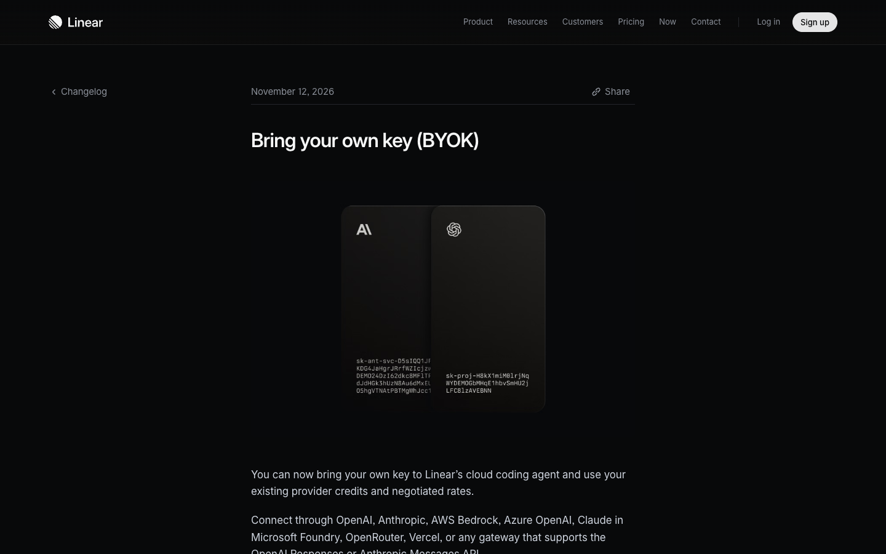
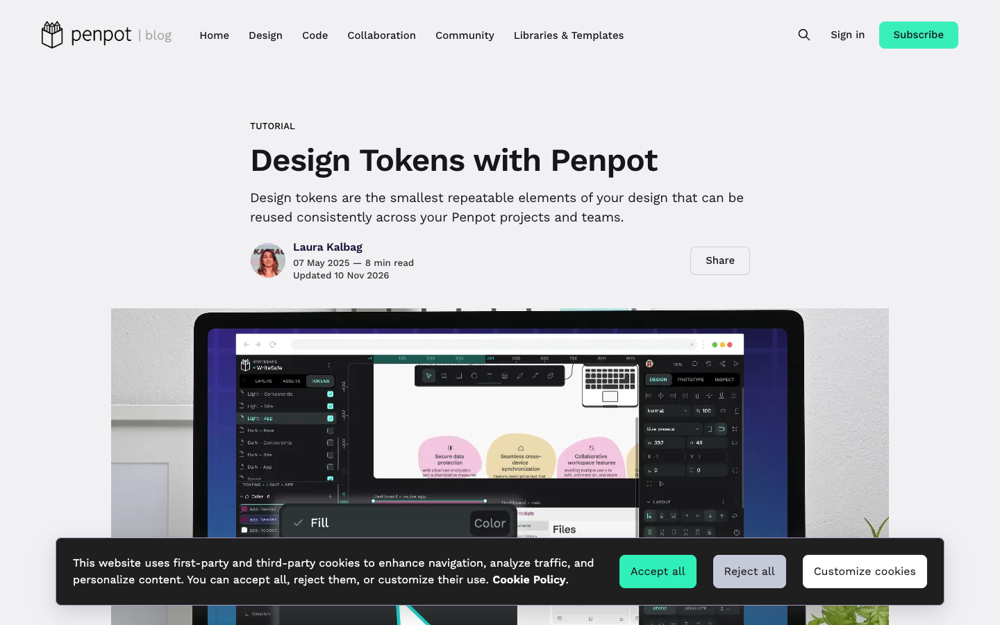
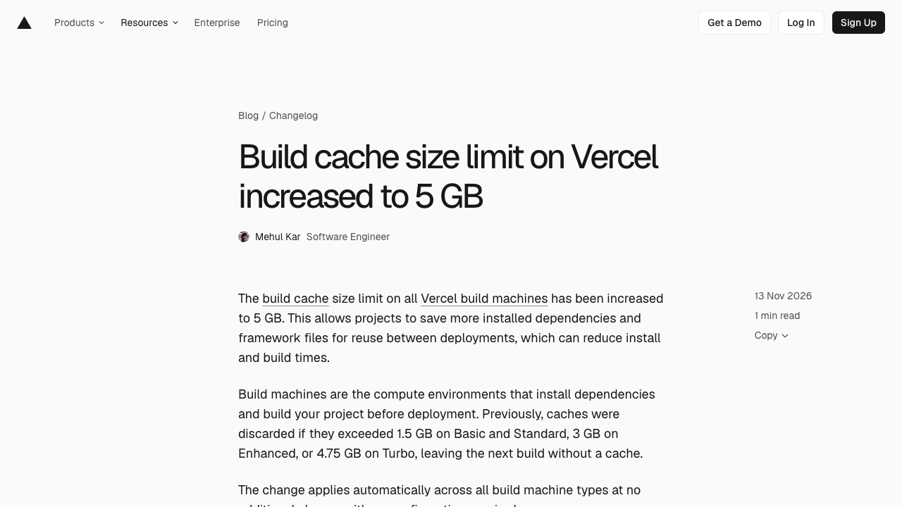
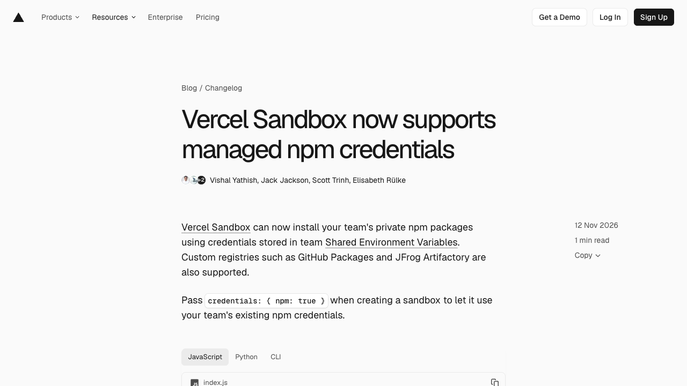
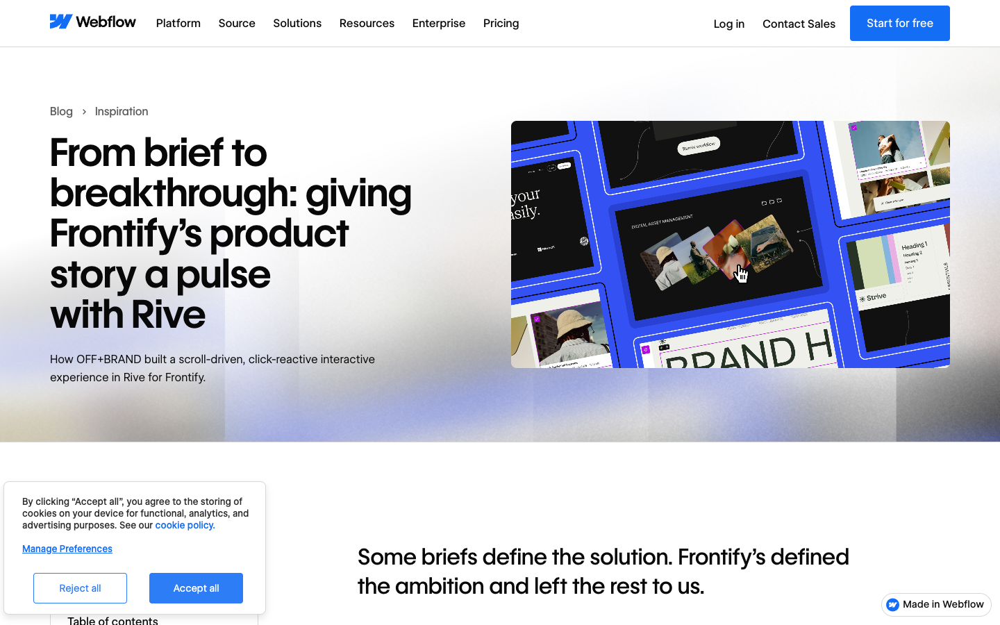

今天的主角不是“又多了一个会生成的模型”，而是成本和边界终于被写进产品接口。Linear 把模型账单与 sandbox 运行账单拆开，Vercel 把额度、缓存和私有包凭证分别显式化，Penpot 与 Rive 则把变量和交互拉回可维护结构。
设计团队接上 AI 之后，真正会拖慢交付的往往不是第一版出得慢，而是凭证暴露、缓存失效、token 超支、组件逻辑没人能接手。今天这批更新都在回答同一个问题：生成之后，谁付钱、谁能访问、哪里能复现、出了问题怎么查。

Linear 现在允许所有现有方案接入自己的 OpenAI、Anthropic、AWS Bedrock、Azure OpenAI、Claude in Foundry、OpenRouter 或 Vercel 凭证，也支持兼容 OpenAI Responses / Anthropic Messages 的网关。模型用量由供应商计费，Linear 的 sandbox 运行仍消耗 Linear AI credits；ChatGPT 或 Claude 订阅也不能替代 API key。
这不是一张“支持更多模型”的清单，而是两本账。采购表里至少要拆出模型 token 与运行时 credits，权限表里还要写清 key 属于个人、团队还是网关；否则 BYOK 只是把平台的黑箱账单换成团队自己的黑箱账单。还没拿真实仓库跑过，先不判断它的失败重试是否也收费。
Vercel Token Pass 仍是 Pro 团队的 Early Access add-on，月费 30 美元，额度从 80 美元升到 150 美元，只适用于 AI Gateway 里指定的 open-weight 模型，月底不结转。普通 AI Gateway key 超额后会回落到团队余额继续计费；Token Pass 专用 key 用完即停，不产生 overage。
表面是五倍面值，真正能改变产品决策的是 key 的失败方式。做 demo 可以用普通 key 保连续性，做预算受控的批处理或 agent 实验，专用 key 的“到线即停”更诚实；但模型池受限、额度不结转，不能拿 150 美元直接等同可替代的通用推理预算。

Penpot 的 token sets、themes 和 theme groups 已经能组合颜色模式、密度与品牌主题，并通过 shared libraries 跨文件复用。连接库后选择 Set as tokens source，该库会成为当前文件唯一的 token 来源，而不是再复制一份变量快照。
“唯一来源”比“支持 token”重要得多，它把覆盖冲突直接变成产品规则。适合先拿一组颜色 × 密度做双轴 theme 验证，再观察库更新、回滚和分支审查是否够用；如果版本治理还要靠口头约定，变量面板再完整也只是更漂亮的同步按钮。

Vercel 把所有 build machine 的缓存上限统一到 5GB，原先 Basic / Standard 是 1.5GB、Enhanced 是 3GB、Turbo 是 4.75GB；更新自动生效，不需要配置，也不额外收费。
对带 Storybook、字体、WASM 或 3D 依赖的前端仓库，这是实打实的安装时间缓冲。但缓存更大不是放任依赖继续膨胀的理由：把 cold build 与 warm build 分开记，缓存命中率和依赖体积一起看，才能分清“基础设施变快”还是“包袱被藏起来了”。

Vercel Sandbox 现在可用 credentials: { npm: true } 安装团队的私有 npm 包，也覆盖 GitHub Packages、JFrog 等自定义 registry。凭证存放在 Shared Environment Variables，防火墙在安装请求经过时补上授权，token 本身不进入 sandbox。
这对让 agent 复现真实设计系统最有用：它终于能装到私有组件，而不用把长期 token 塞进临时环境。边界也很清楚——凭证没进沙箱，不代表所有包都该开放；registry、scope、只读权限和安装日志仍然要收窄，否则“能跑起来”会先于最小权限落地。

OFF+BRAND 为 Frontify 做的滚动故事把实现细节交代得很实在：JavaScript 驱动 Rive 的 scroll_y，通过 joystick 的 -100% 到 100% 映射进 blend state；组件、remap 与 nested timelines 控制文件复杂度，箭头只做一个基础组件，再用 path variants 和 trim-path overlap 维持连续运动。
最该抄走的不是视觉风格，而是一条硬约束：scroll timeline 与 click timeline 不要同时控制同一个属性。鼠标样式也不是在画布里猜，而是用 Rive data binding 回传给 JavaScript / CSS。交互文件能不能被下一位设计工程师接住，往往就差这些看似无聊的控制权划分。
视频：Disney 官方落地页https://video.disney.com/watch/gatto-official-trailer-in-theaters-march-5-2027-66019a8462ded13689429c7b｜类型：2D × 3D / animated feature trailer｜片长：142.7 秒｜上映：2027 年 3 月 5 日
《Gatto》先用市场追逐和“九条命”把规则说清，再从个体逃生切到群体关系与大场面。142 秒里，信息不是靠旁白排队，而是靠色彩分区：白天的街市用暖黄、石灰墙和高饱和食物建立生活感，危险段落压成蓝黑与近单色，音乐演奏、群猫聚集和俯拍爆点再把色彩重新放回来。
它真正有意思的是“2D 感”没有停在贴一层纸纹。角色轮廓、墙面、阴影边缘和速度线都保留可见笔触，但镜头仍有完整的 3D 景深、透视和灯光体积；手绘字卡也不只是章节标题，字形的拉伸、发光和尾巴线条直接接住猫的动作。画面很满，阅读顺序却稳定：先角色眼神和动作，再看环境细节，最后才轮到材质炫技。
做产品发布片可以拿走一套很具体的办法：先规定“事实层、情绪层、爆点层”各自的色域和镜头职责，再让同一个品牌形态贯穿字卡、转场与界面反馈。别把 2D 笔触当滤镜全局覆盖；只在轮廓变化、速度与情绪转折处出现，画面会更有手感，也更省实现成本。
飞书发布使用 Disney 官方落地页的 URL Preview；本地已从官方 Kaltura 流回放并抽取 14 个时间点检查，不插入单独视频封面块。
Stash 在 11 月 15 日新增 Stash 180 Previewhttps://www.stashmedia.tv/new-issue-stash-180-drops-inspiration-insight-insanity/。文章汇集本期 animation / VFX / motion design 片段，适合当选题雷达；但 Vimeo 播放器当前返回 401，今天只核到文章元数据和 1920×1080 编辑拼图，不拿静态图冒充运动判断。
prefers-reduced-motion 下是否仍然成立。核验说明：Linear、Penpot、Vercel、Webflow / OFF+BRAND、Disney Video、Stash 首页与 WordPress API 于 2026-11-16 回读。正文 7 张配图原始宽度为 1280–1440px，已逐张目视检查；Stash 180 的 1920px 编辑图只用于证据，不嵌入日报。飞书文档、URL Preview 与群消息状态以最终 CLI 回读为准。